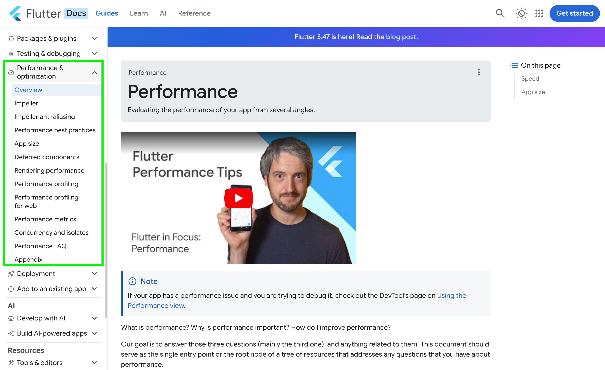
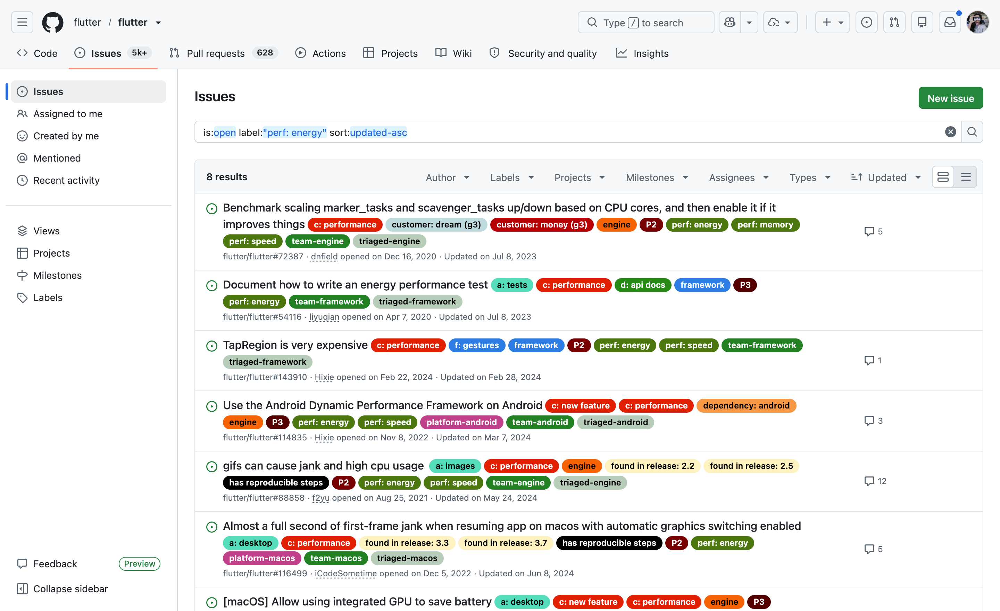
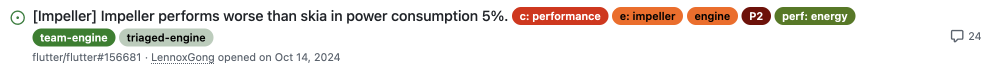

「滑らかさ」の先へ
Flutterアプリの省電力設計
快適な操作感の裏にある「バッテリー消費」「GPU負荷」「端末の発熱」を見直す
事項紹介
インド出身
Flutter Engineer・5年目
Graphicプログラミングが好き。p5.js、GLSLなどを書いています
Flutterでパフォーマンスを考える時にまず見るページ
まずは公式ドキュメントの docs.flutter.dev/perf を見る人が多いです。

Performance は1つではない
speed
フレーム時間、jank、スクロールの滑らかさ。
memory
メモリ使用量、リーク、不要な保持。
app size
配布サイズ、含める依存、不要なアセット。
energy
バッテリー消費、発熱、アイドル時の無駄な動作。
perf: energy に絞って見ます。
GitHubラベル: perf: energy
Flutter の issue tracker にも、energy 専用のラベルがあります。


DevTools で見えること / 見えないこと
DevTools だけでは見えないもの
- 実際の消費電力そのもの
- 端末の熱状態との関係
- OS が見ている energy impact
アイドル時にまだ動いていないか
何もしていない時に空白になるか
例: 隠れた Ticker、無限シマー、止まらない loop
Raster が重すぎないか
GPU に重い仕事が集まっていないか
例: ぼかし、mask、複雑な合成
毎フレーム全部塗り直していないか
Highlight Repaints を見る
例: RepaintBoundary 不足、広すぎる再描画
Profile / Release ビルド と native tool も必要です。
ネイティブ側のツールも一緒に使う
Xcode Instruments
Energy Log で傾向と熱状態を見る
iOS / macOSAndroid Studio
Power Profiler / Energy Profiler を使う
AndroidBatterystats / Perfetto
長い時間の消費や wakeup を追う
adb / traceXcode Instruments: Energy Log
確認できる項目
- カーネル評価値: CPU/GPU/ネットワーク/カメラ等の使用量をiOSカーネルが総合評価
- 20段階エネルギーインパクト: 0 (Very Low) 〜 20 (Very High) の相対指標
- Thermal State 連携: Nominal (正常) / Fair / Serious / Critical (過熱スロットリング) を監視
使い方
- 実機を Wi-Fi デバッグ接続し Xcode Instruments の Energy Log を起動
- アプリ画面の無操作時にスコアが 0〜1 に即座に下がるか判定
- スクロールやアニメーション中に 15 以上 のスパイクが持続しないか確認

Android Studio: Power Profiler
確認できる項目
- サブシステム監視: CPU・Network・Location (GPS) の動きをまとめて見る
使い方
-
<profileable android:shell="true"/>を含むビルドを準備 - Android Studio Profiler で、操作中と無操作中の差を見る

Batterystats / Battery Historian / Perfetto
確認できる項目
- Batterystats: Android OS が記録する低レイヤーの消費ログ
- Battery Historian: ログをブラウザで見やすく確認
- Perfetto: もっと細かい trace を見たい時に便利
使い方
# 統計のリセット
adb shell dumpsys batterystats --reset
# USBを外して実機で操作・放置
# バグレポートの採取
adb bugreport bugreport.zipAndroid 10 以降には ODPM もありますが、対応ハードウェアはまだ多くないです。
バッテリー消費の主な原因
バックグラウンド通信
データ取得の連続 polling など、画面を見ていない間も通信が続く。
CPU / GPU の連続稼働
アニメーションの描画や毎フレームの shader 計算が長時間続く。
Liquid Glassの話しますか
liquid_glass_widgetsを使用しているページ
Native iOS Liquid Glass
Liquid Glass の裏側: BackdropFilter
何を描いている?
- 背後の画面を読み取る
- 指定範囲に blur などの画像フィルターをかける
- 半透明の tint や枠を重ねて合成する
BackdropFilter
は背後のピクセルを加工します。クリップすると処理範囲を限定できます。
なぜ電池に響く?
- スクロールやアニメーションで背景が変わるたび、フィルター結果も更新
- 広い範囲・強い blur・重なるフィルターほど GPU とメモリ帯域の負荷が増える
- GPU が働き続けると消費電力と発熱が増え、長時間では性能低下にもつながる
BackdropFilter はどう描画される?
flowchart TD
background["背後のWidgetを描画"] --> capture["対象範囲を取り込む"]
capture --> blur["blur を適用"]
blur --> composite["tint・前景と合成"]
composite --> output["画面に出力"]

背景が動くと、新しいフレームごとにフィルター結果も作り直します。
でも、BackdropFilterを使いたい！
以下のように動くとどうですか
- 他のWidgetを使えるかどうかをみましょう
- コストが高いWidgetを使っている場所は見た目的にどうなっているのか
- 実際にこの表示で良いのか

まとめ
1. ライフサイクル連動
画面非表示時・バックグラウンド移行時は即座にアニメーションとTimerを完全停止。
2. 描画境界の適切な隔離
変化頻度の高いウィジェットに
RepaintBoundary を付与し、静的UIの再描画を防止。
3. AIアシスタントへの指針共有
LLMにコード生成させる際、安易に Opacity や BackdropFilter を書かせないプロンプト規約を策定。
今後確認できると良いもの
計測・プロファイリング環境
- 実機 Profile ビルドで測定したか？
- Wi-Fi 無線接続で給電影響を排除したか？
- 無操作時にタイムラインが空白に近い状態になるか？
- Highlight Repaints で不要な点滅がないか？
コードレビュー指摘と重いウィジェット
- 透過に
Opacityでなく色アルファ値を使ったか？ BackdropFilterを擬似レイヤー等で代替したか？antiAliasWithSaveLayerを乱用していないか？- 画面外の Ticker / Timer が確実に停止しているか？